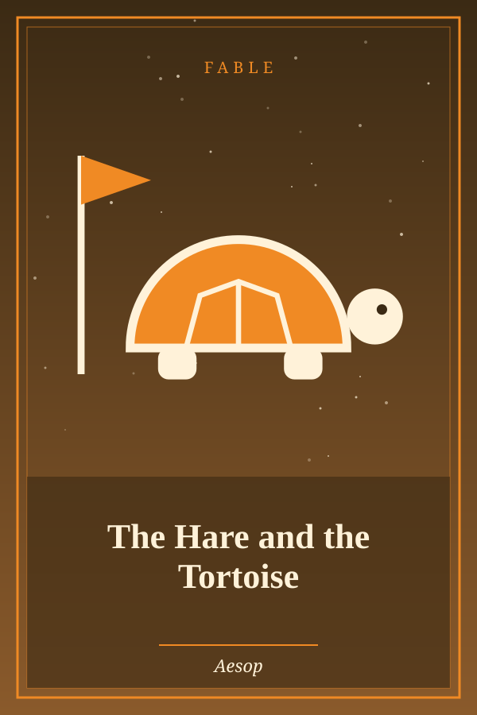
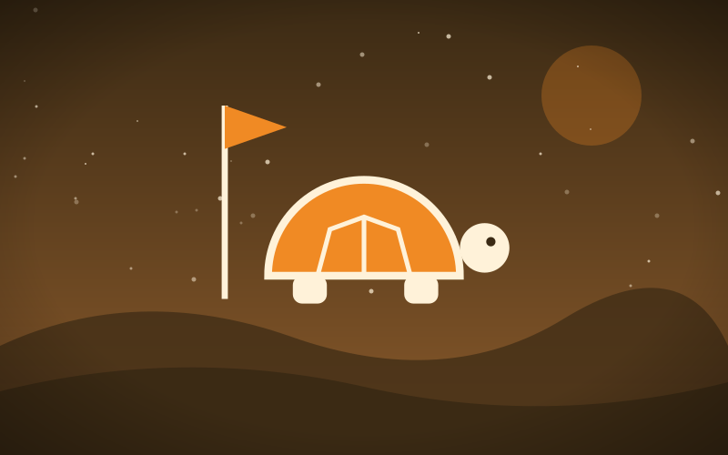

The Hare and the Tortoise
Genre: Fable
Synopsis
A boastful hare mocks a slow tortoise and agrees to a race he is sure to win.
Chapter 1: The Hare and the Tortoise

A Hare one day ridiculed the short feet and slow pace of the Tortoise, who replied, laughing: “Though you be swift as the wind, I will beat you in a race.” The Hare, believing her assertion to be simply impossible, assented to the proposal; and they agreed that the Fox should choose the course and fix the goal. On the day appointed for the race the two started together. The Tortoise never for a moment stopped, but went on with a slow but steady pace straight to the end of the course. The Hare, lying down by the wayside, fell fast asleep. At last waking up, and moving as fast as he could, he saw the Tortoise had reached the goal, and was comfortably dozing after her fatigue.
Slow but steady wins the race.